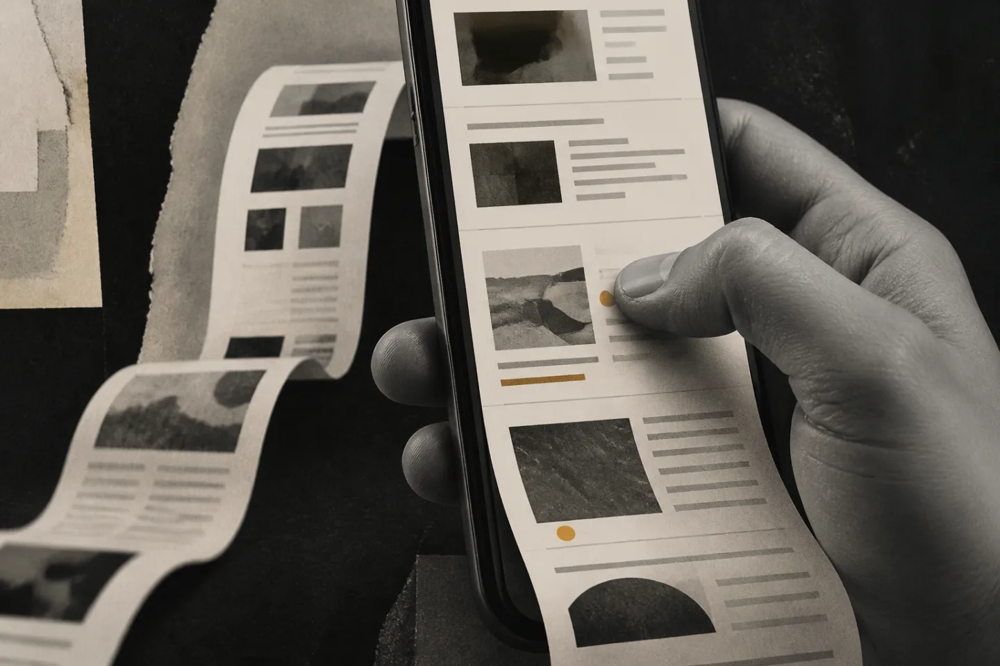
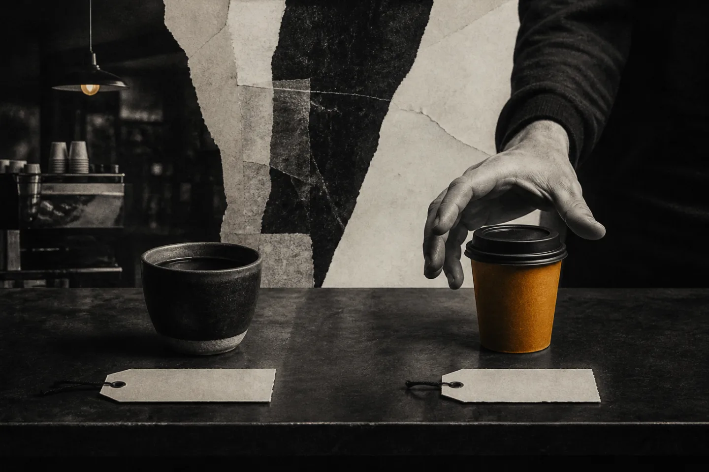

notes from
the inside.
brand work gets cleaner when you stop talking about it from a distance. these are the rooms, bets, and decisions behind the headline.

inside GUVI’s two guinness world records strategy.
what a vernacular edtech company proved about making a category position hard to argue with.
read the case study
what my parents knew about trust.
thirty-five years inside a printing press taught me what recommendation really costs.
read the essay
the scar that started dodo payments.
a payments company built from the revenue its founder could not collect.
read the case study
the scroll test.
what francis zierer taught me about making a company publication worth reading.
read the notes
the product is the possibility.
the strategy document was forgotten. the confidence it created was the real work.
read the essay
they went with the cheaper one.
what selling specialty coffee taught me about being easier to choose.
read the essay
the more you explain, the worse it gets.
adding words is often evidence that the positioning underneath is not working.
read the note
the five-second test most founders fail.
your homepage can look considered and still make sense only to people who already understand you.
run the test